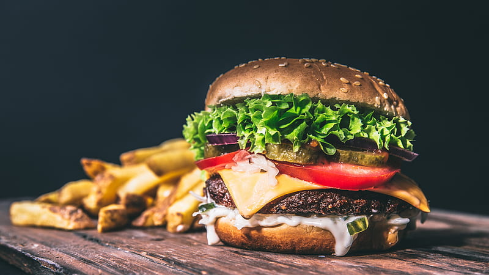

Burger
A hamburger, or simply burger, is a food consisting of fillings—usually a patty of ground meat, typically beef—placed inside a sliced bun or bread roll. Hamburgers are often served with cheese, lettuce, tomato, onion,................

Alfarm
Fahum is an Arabic word for coal and the name comes from this word. Al Faham is basically the Arabian barbecued chicken usually grilled over coal or in oven. Although this dish originated in the Middle East, it is now more popular in India, especially Kerala.

Biriyani
Biryani is one of the most popular dishes in South Asia, as well as among the diaspora from the region. Similar dishes are also............